Bài tập — Bài 9 — Thực hành đo suất điện động và điện trở trong của pin
Hệ bài tập được biên soạn theo các dạng xuất hiện trong bộ tài liệu Vật lí 11 của dự án. Câu hỏi được giữ ngắn, trực tiếp; độ khó tăng dần và không cố tình thêm dữ kiện gây nhiễu.
Phần A — Trắc nghiệm 4 lựa chọn
Bài 1 — Mức 1 — Nhận biết
Khi đo quan hệ U–I của nguồn đang phát điện, đồ thị lí tưởng có dạng
A. \(U=\mathcal E-rI\). B. \(U=\mathcal E+rI\). C. \(U=r/I\). D. \(U=0\) mọi I.
Đáp án và lời giải
Chọn A.
Bài 2 — Mức 1 — Nhận biết
Trên đồ thị U theo I của nguồn, tung độ gốc biểu diễn
A. điện trở ngoài. B. suất điện động \(\mathcal E\). C. công suất. D. điện lượng.
Đáp án và lời giải
Chọn B.
Bài 3 — Mức 1 — Nhận biết
Độ lớn hệ số góc của đường thẳng U–I bằng
A. \(\mathcal E\). B. r. C. R ngoài. D. I ngắn mạch.
Đáp án và lời giải
Chọn B vì hệ số góc là \(-r\).
Bài 4 — Mức 1 — Nhận biết
Trong thí nghiệm, thao tác nào không an toàn cho nguồn thực?
A. Thay đổi biến trở để lấy nhiều điểm U–I. B. Đo U và I trong giới hạn dụng cụ. C. Nối tắt trực tiếp nguồn trong thời gian dài để đo dòng ngắn mạch. D. Mở khóa K giữa các lần chỉnh mạch.
Đáp án và lời giải
Chọn C vì dòng ngắn mạch có thể rất lớn và làm nóng/hỏng nguồn, dây, dụng cụ.
Phần B — Đúng/Sai
Bài 5 — Mức 2 — Thông hiểu
Thí nghiệm xác định \(\mathcal E,r\):
a) Cần đo nhiều cặp (I,U) để giảm ảnh hưởng sai số. b) Có thể lấy \(\mathcal E\) từ giao điểm trục U. c) r lấy từ độ lớn độ dốc của đồ thị U theo I. d) Chỉ cần một cặp U,I bất kì là luôn xác định được cả \(\mathcal E\) và r mà không có dữ kiện khác.
Đáp án và lời giải
a) Đúng. b) Đúng. c) Đúng. d) Sai: một phương trình \(U=\mathcal E-rI\) có hai ẩn.
Bài 6 — Mức 2 — Thông hiểu
Với nguồn đang phát điện:
a) U giảm gần tuyến tính khi I tăng nếu \(\mathcal E,r\) không đổi. b) I=0 cho U=\(\mathcal E\). c) Giao điểm trục I của đường kéo dài là \(I_{sc}=\mathcal E/r\). d) Nên luôn trực tiếp đo I_sc để chính xác nhất.
Đáp án và lời giải
a) Đúng. b) Đúng. c) Đúng về mô hình. d) Sai vì nguy cơ ngắn mạch; thường suy ra từ đường thẳng an toàn hơn.
Phần C — Trả lời ngắn
Bài 7 — Mức 3 — Vận dụng
Hai điểm đo: \((I_1,U_1)=(0,5\text{ A},5,7\text{ V})\) và \((I_2,U_2)=(1,5\text{ A},5,1\text{ V})\). Tính r và \(\mathcal E\).
Đáp án và lời giải
Từ \(U=\mathcal E-rI\): \(r=(U_1-U_2)/(I_2-I_1)=(5,7-5,1)/(1,5-0,5)=0,6\,\Omega\). \(\mathcal E=U_1+rI_1=5,7+0,6\cdot0,5=6,0\) V.
Bài 8 — Mức 3 — Vận dụng
Đồ thị U–I đi qua \((0,6\text{ A},8,7\text{ V})\) và \((1,8\text{ A},8,1\text{ V})\). Tính \(\mathcal E,r\).
Đáp án và lời giải
\(r=(8,7-8,1)/(1,8-0,6)=0,5\,\Omega\). \(\mathcal E=8,7+0,5\cdot0,6=9,0\) V.
Bài 9 — Mức 3 — Vận dụng
Nguồn có \(\mathcal E=3,0\) V, \(r=0,40\,\Omega\). Dự đoán U khi I=2,0 A.
Đáp án và lời giải
\(U=3,0-0,40\cdot2,0=2,2\) V.
Phần D — Vận dụng và vận dụng cao
Bài 10 — Mức 4 — Vận dụng cao
Bốn cặp số đo \((I,U)\) là: (0,5 A; 5,82 V), (1,0 A; 5,61 V), (1,5 A; 5,39 V), (2,0 A; 5,20 V). Hãy ước tính r và \(\mathcal E\) bằng cách dùng hai điểm đầu–cuối, sau đó kiểm tra hai điểm giữa có phù hợp gần đúng không.
Đáp án và lời giải
Dùng đầu–cuối:
\(r\approx(5,82-5,20)/(2,0-0,5)=0,62/1,5\approx0,413\,\Omega\).
\(\mathcal E\approx U+rI=5,82+0,413\cdot0,5\approx6,03\) V.
Dự đoán tại I=1,0 A: \(U\approx6,03-0,413=5,62\) V, rất gần 5,61 V.
Tại I=1,5 A: \(U\approx6,03-0,620=5,41\) V, gần 5,39 V.
Các điểm phù hợp với mô hình tuyến tính trong sai số đo nhỏ. Khi làm thực nghiệm thật, nên hồi quy tuyến tính toàn bộ dữ liệu thay vì chỉ hai điểm.
Ngân hàng bài tập mở rộng
Các bài dưới đây được đánh số nối tiếp phần bài tập phía trên. Đề bài được trình bày bằng Markdown; chỉ đồ thị, hình vẽ hoặc sơ đồ thực sự cần thiết mới được giữ dưới dạng hình. Đáp án và lời giải được đặt trong nút mở rộng ngay dưới từng bài.
Nhận biết — Trả lời ngắn
Bài 11
Khi thực hiện thí nghiệm đo suất điện động ξ và điện trở trong r của nguồn, điều chỉnh biến trở tại vị trí 90 Ω, ta thu được các kết quả của hiệu điện thế lần lượt là 2,84 V; 2,86 V; 2,87 V. Giá trị trung bình của hiệu điện thế trong trường hợp này (theo đơn vị V và đúng với số chữ số có nghĩa của phép đo) là bao nhiêu?
Đáp án và lời giải
Đáp án: \(2{,}86\) Hướng dẫn giải:
Dùng \(U=\mathcal E-Ir\); từ hai trạng thái tải khác nhau lập hai phương trình để xác định \(\mathcal E\) và \(r\).
Vậy kết quả cần tìm là \(2{,}86\).
Bài 12
Khi thực hiện thí nghiệm đo suất điện động ξ và điện trở trong r của nguồn, điều chỉnh biến trở tại vị trí 90 Ω, ta thu được các kết quả của hiệu điện thế lần lượt là 2,84 V; 2,86 V; 2,87 V. Giá trị sai số tuyệt đối trung bình của hiệu điện thế trong trường hợp này (theo đơn vị V và đúng với số chữ số có nghĩa của phép đo) là bao nhiêu? Bỏ qua sai số dụng cụ.
Đáp án và lời giải
Đáp án: \(0{,}01\)
Hướng dẫn giải: U̅ = 2,84 + 2,86 + 2,87 3 = 2,86 V. ∆U ̅̅̅̅ = |2,86 −2,84| + |2,86 −2,86| + |2,86 −2,87| 3 = |0,02| + |−0,01| 3 = 0,01 V.
Bài 13
Một học sinh thực hiện thí nghiệm đo suất điện động ξ và điện trở trong r của nguồn và vẽ được đồ thị mô tả mối quan hệ giữa U – I như hình bên dưới. Hãy ước lượng giá trị suất điện động ξ (V) của nguồn.
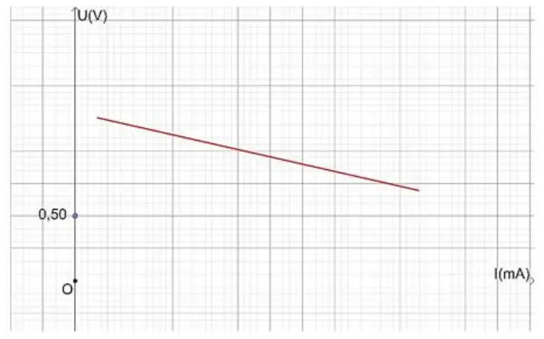
Đáp án và lời giải
Đáp án: \(1{,}30\)
Hướng dẫn giải: Từ đồ thị, ta kéo dài đoạn thẳng cắt trục tung tại một điểm. Tại vị trí này ứng với cường độ dòng điện I = 0 mA.
Khi đó ta thu được: 𝑈= 𝜉= 1,30 𝑉.
Bài 14
Một học sinh thực hiện thí nghiệm đo suất điện động ξ và điện trở trong r của nguồn và vẽ được đồ thị mô tả mối quan hệ giữa U – I như hình bên dưới. Hãy xác định giá trị điện trở trong r (Ω) của nguồn.
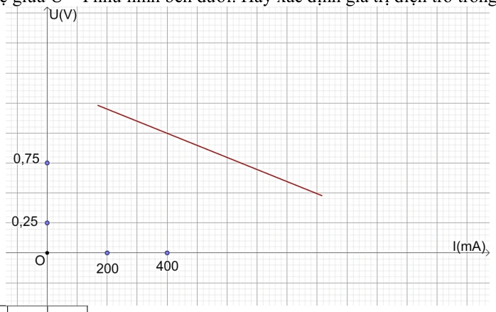
Đáp án và lời giải
Đáp án: 1
Hướng dẫn giải: Ta chọn 2 điểm A (440; 0,95) và N (740; 0,65) nằm trên đồ thị.
𝑟= 𝑈𝑀−𝑈𝑁 𝐼𝑁−𝐼𝑀 = 0,95 −0,65 0,740 −0,440 = 1,0 𝛺.
1
Nhận biết — Trắc nghiệm 4 lựa chọn
Bài 15
Ta có thể không thể sử dụng đồ hồ đa năng để đo trực tiếp đại lượng nào sau đây?
A. Suất điện động của nguồn.
B. Hiệu điện thế giữa hai cực của đoạn mạch.
C. Điện trở trong của nguồn.
D. Dòng điện chạy trong đoạn mạch.
Đáp án và lời giải
Đáp án: C Hướng dẫn giải:
Dùng \(U=\mathcal E-Ir\); từ hai trạng thái tải khác nhau lập hai phương trình để xác định \(\mathcal E\) và \(r\).
Đối chiếu kết quả với các lựa chọn, phương án phù hợp là C. Điện trở trong của nguồn.
Bài 16
Khi ta sử dụng đồng hồ điện đa năng hiện số như hình . Để tiến hành đo hiệu điện thế giữa hai đầu mạch điện thì ta xoay núm vặn về chế độ đo hiệu điện thế DC và cần nối dây vào
A. (3) và (4).
C. (1) và (3).
B. (2) và (3).
D. (1) và (4).
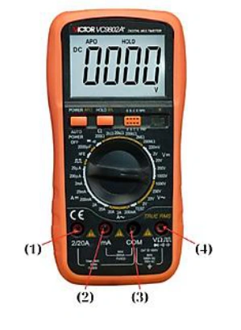
Đáp án và lời giải
Đáp án: A Hướng dẫn giải:
Dùng \(U=\mathcal E-Ir\); từ hai trạng thái tải khác nhau lập hai phương trình để xác định \(\mathcal E\) và \(r\).
Đối chiếu kết quả với các lựa chọn, phương án phù hợp là A. (3) và (4).
Bài 17
Những dụng cụ chính để đo suất điện động ξ và điện trở trong r của nguồn trong phòng thí nghiệm là
A. pin điện hóa; điện trở có giá trị xác định; hai đồng hồ điện đa năng hiện số; khóa K; bảng lắp mạch điện và dây nối.
B. pin điện hóa; biến trở 100 Ω; điện trở có giá trị xác định; hai đồng hồ điện đa năng hiện số; khóa K; bảng lắp mạch điện và dây nối.
C. pin điện hóa; biến trở 100 Ω; điện trở có giá trị xác định; hai đồng hồ điện đa năng hiện số; khóa K và bảng lắp mạch điện.
D. pin điện hóa; biến trở 100 Ω; điện trở có giá trị xác định; hai đồng hồ điện đa năng hiện số; khóa K; bảng từ và dây nối.
Đáp án và lời giải
Đáp án: B Hướng dẫn giải:
Dùng \(U=\mathcal E-Ir\); từ hai trạng thái tải khác nhau lập hai phương trình để xác định \(\mathcal E\) và \(r\).
Đối chiếu kết quả với các lựa chọn, phương án phù hợp là B. pin điện hóa; biến trở 100 Ω; điện trở có giá trị xác định; hai đồng hồ điện đa năng hiện số; khóa K; bảng lắp mạch điện và dây nối.
Bài 18
Bên dưới là các hình ảnh của một dụng cụ dùng trong thí nghiệm đo suất điện động ξ và điện trở trong r. Tên của loại dụng cụ này là
A. biến trở.
C. nguồn điện.
B. đồng hồ điện đa năng hiện số.
D. máy biến áp.
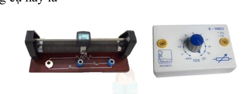
Đáp án và lời giải
Đáp án: D Hướng dẫn giải:
Dùng \(U=\mathcal E-Ir\); từ hai trạng thái tải khác nhau lập hai phương trình để xác định \(\mathcal E\) và \(r\).
Đối chiếu kết quả với các lựa chọn, phương án phù hợp là D. máy biến áp.
Bài 19
Dụng cụ nào sau đây được sử dụng trong bộ thí nghiệm đo suất điện động ξ và điện trở trong r?
Hình 1. Pin điện hóa Hình 2. Máy phát tần số Hình 3. Khóa K Hình 4. Dây dẫn
A. Hình 1,2,3.
B. Hình 2,3,4.
C. Hình 1,3,4.
D. Hình 1,2,4.
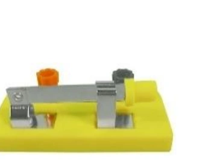
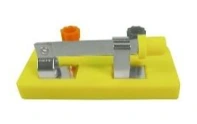
Đáp án và lời giải
Đáp án: C Hướng dẫn giải:
Dùng \(U=\mathcal E-Ir\); từ hai trạng thái tải khác nhau lập hai phương trình để xác định \(\mathcal E\) và \(r\).
Đối chiếu kết quả với các lựa chọn, phương án phù hợp là C. Hình 1,3,4.
Bài 20
Khi vẽ đồ thị mô tả U – I trong bài thí nghiệm đo suất điện động ξ và điện trở trong r thì ta sẽ thu được đồ thị có dạng
A. Hình 1.
B. Hình 2.
C. Hình 3.
D. Hình 4.
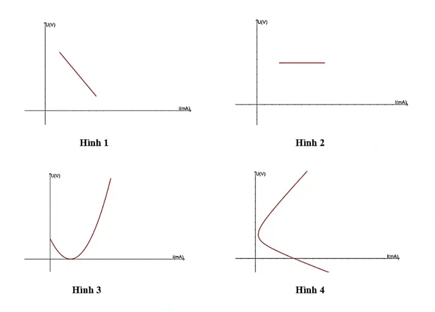
Đáp án và lời giải
Đáp án: D Hướng dẫn giải:
Dùng \(U=\mathcal E-Ir\); từ hai trạng thái tải khác nhau lập hai phương trình để xác định \(\mathcal E\) và \(r\).
Đối chiếu kết quả với các lựa chọn, phương án phù hợp là D. Hình 4.
Bài 21
Hãy sắp xếp các bước thực hiện thí nghiệm đo suất điện động ξ và điện trở trong r của nguồn với dụng cụ được bố trí như sơ đồ. (I). Ghi giá trị hiệu điện thế U và cường độ dòng điện I trên đồng hồ. Ngắt khóa K. Lặp lại 4 lần các bước 2, 3, 4 với giá trị Rx giảm dần. (II). Chọn hai điểm A và B bất kì trên đồ thị với các giá trị U, I tương ứng và xác định điện trở trong bằng công thức: r = UA −UB IB −IA
(III). Điều chỉnh biến trở đến giá trị Rx = 100 Ω. Đóng khóa K, bật đồng hồ đo hiệu điện thế và cường độ dòng điện. (IV). Đánh dấu các điểm thực nghiệm lên hệ trục tọa độ (U – I) và vẽ đường thẳng đi gần nhất các điểm thực nghiệm. Kéo dài đường độ thị cắt trục tung tại U0 và xác định suất điện động ξ của pin chính bằng giá trị U0.
A. (I) – (III) – (IV) – (II).
B. (II) – (I) – (III) – (IV).
C. (III) – (I) – (IV) – (II).
D. (III) – (I) – (II) – (IV).

Đáp án và lời giải
Đáp án: C Hướng dẫn giải:
Dùng \(U=\mathcal E-Ir\); từ hai trạng thái tải khác nhau lập hai phương trình để xác định \(\mathcal E\) và \(r\).
Đối chiếu kết quả với các lựa chọn, phương án phù hợp là C. (III) – (I) – (IV) – (II).
Bài 22
Khóa K có tác dụng
A. hiển thị giá trị hiệu điện thế giữa hai đầu mạch điện.
B. hiển thị giá trị cường độ dòng điện chạy trong mạch.
C. tạo thành mạch điện kín hoặc mạch hở.
D. điều chỉnh điện trở tương đương trong mạch.
Đáp án và lời giải
Đáp án: C Hướng dẫn giải:
Dùng \(U=\mathcal E-Ir\); từ hai trạng thái tải khác nhau lập hai phương trình để xác định \(\mathcal E\) và \(r\).
Đối chiếu kết quả với các lựa chọn, phương án phù hợp là C. tạo thành mạch điện kín hoặc mạch hở.
Bài 23
Một học sinh thực hiện thí nghiệm đo suất điện động ξ và điện trở trong r của nguồn và vẽ được đồ thị mô tả mối quan hệ giữa U – I như hình bên dưới. Hãy ước lượng giá trị suất điện động ξ của nguồn.
A. 1,50 V.
B. 1,25 V.
C. 1,30 V.
D. 1,40 V.
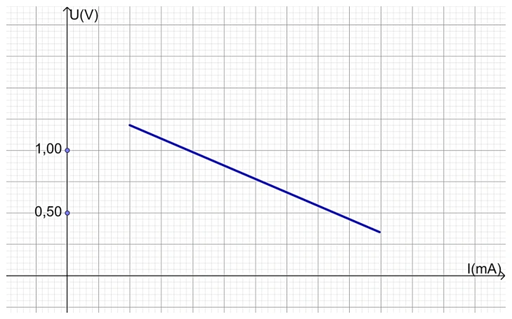
Đáp án và lời giải
Đáp án: D Hướng dẫn giải: Từ đồ thị, ta kéo dài đoạn thẳng cắt trục tung tại một điểm. Tại vị trí này ứng với cường độ dòng điện I = 0 mA.
Khi đó ta thu được: 𝑈= 𝜉= 1,40 𝑉.
Bài 24
Một học sinh thực hiện thí nghiệm đo suất điện động ξ và điện trở trong r của nguồn và vẽ được đồ thị mô tả mối quan hệ giữa U – I như hình bên dưới. Hãy xác định giá trị điện trở trong r của nguồn.
𝐀.
A. 0,75 Ω.
B. 0,56 Ω.
C. 0,37 Ω.
D. 0,45 Ω
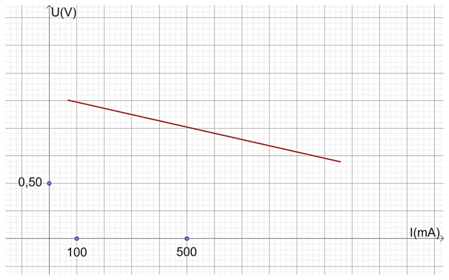
Đáp án và lời giải
Đáp án: B Hướng dẫn giải: Ta chọn 2 điểm M (600; 0,95) và N (960; 0,75) nằm trên đồ thị.
r = UM −UN IN −IM = 0,95 −0,75 0,960 −0,600 = 0,56 Ω.
Nhận biết — Đúng/Sai
Bài 25
Để thực hiện thí nghiệm đo suất điện động ξ và điện trở trong r của nguồn, dụng cụ thí nghiệm được bố trí như sơ đồ. Xác định nhận định sau đây đúng hay sai?
a) Ta cần kiểm tra thiết bị, dụng cụ thí nghiệm trước khi tiến hành thí nghiệm nhằm đảm bảo các quy tắc an toàn trong phòng thí nghiệm. b) Biến trở có công dụng điều chỉnh điện trở trong của nguồn. c) Khi ta vẽ đồ thị mô tả mối liên hệ giữa (U – I), đường thẳng kéo dài cách trục tung tại một điểm mà tại đó UMN = ξ. d) Trong quá trình thực hiện thí nghiệm, việc lựa chọn thang đo trên đồng hồ đo điện đa năng không làm ảnh hưởng đến kết quả.
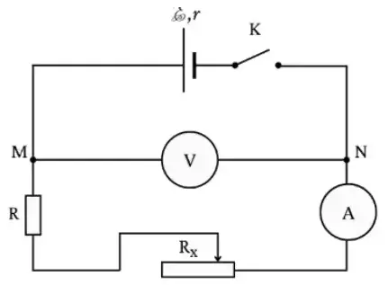
Đáp án và lời giải
Đáp án: a) Đúng; b) Sai; c) Đúng; d) Sai.
Hướng dẫn giải:
a) Đúng. Kiểm tra dụng cụ, dây nối, thang đo và sơ đồ trước khi đóng mạch là yêu cầu an toàn cơ bản.
b) Sai. Biến trở dùng để thay đổi điện trở mạch ngoài, qua đó thay đổi dòng điện; nó không làm thay đổi điện trở trong \(r\) của nguồn.
c) Đúng. Đặc tuyến \(U=\xi-Ir\) cắt trục tung tại \(I=0\), khi đó \(U=\xi\).
d) Sai. Chọn thang đo không phù hợp có thể làm giảm độ phân giải, tăng sai số hoặc gây quá thang; vì vậy thang đo ảnh hưởng trực tiếp đến chất lượng kết quả.
Bài 26
Để thực hiện thí nghiệm đo suất điện động ξ và điện trở trong r của nguồn, dụng cụ thí nghiệm được bố trí như sơ đồ. Người ta sử dụng đồng hồ đo điện đa năng như hình bên dưới để thu nhận các giá trị hiệu điện thế, cường độ dòng điện trong mạch. Xác định nhận định sau đây đúng hay sai?
a) Điện trở giúp kiểm soát cường độ dòng điện chạy trong mạch, tránh việc quá tải trong mạch. b) Khi ta vẽ đồ thị mô tả mối liên hệ giữa (U – I), nếu ta chọn 2 điểm A, B nằm trên đồ thị thì điện trở trong r của nguồn được tính bằng công thức: r = UA −UB IA −IB c) Để thu được giá trị hiệu điện thế U 0 thì ta cần xoay núm của đồng hồ điện vặn về chế độ đo hiệu điện thế DC; chân (4) nối với điểm M, chân (3) nối với điểm N. d) Để đo cường độ dòng điện có độ lớn khoảng mA, ta cần xoay núm của đồng hồ điện vặn về chế độ đo cường độ dòng điện DC và lựa chọn cổng số (2) và (3) trên đồng hồ điện đo cường độ dòng điện trong mạch.
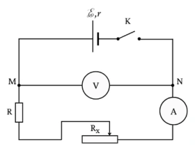
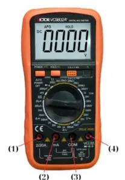
Đáp án và lời giải
Đáp án: a) Đúng; b) Sai; c) Sai; d) Đúng.
Hướng dẫn giải:
a) Đúng. Biến trở/điện trở nối trong mạch giúp giới hạn dòng điện, tránh dòng quá lớn khi thay đổi tải.
b) Sai. Từ phương trình đặc tuyến \(U=\xi-Ir\), hệ số góc của đồ thị \(U-I\) là \(-r\). Với hai điểm \(A,B\): \(r=(U_A-U_B)/(I_B-I_A)\), không phải \((U_A-U_B)/(I_A-I_B)\).
c) Sai. Khi đo điện áp một chiều cần chọn đúng chế độ DC và đúng cực tính: cổng COM nối phía điện thế thấp, cổng V nối phía điện thế cao. Cách nối chân nêu trong phát biểu bị đảo so với sơ đồ nguồn.
d) Đúng. Khi dòng cỡ mA, chọn thang đo dòng một chiều phù hợp và dùng đúng các cổng COM/mA của đồng hồ theo hình.
Bài 27
Để thực hiện thí nghiệm đo suất điện động ξ và điện trở trong r của nguồn, dụng cụ thí nghiệm được bố trí như sơ đồ. Người ta sử dụng đồng hồ đo điện đa năng như hình bên dưới để thu nhận các giá trị hiệu điện thế, cường độ dòng điện trong mạch và thu được đồ thị biểu diễn mối quan hệ giữa U – I như hình bên dưới.
a) Khi thực hiện thí nghiệm, hạn chế việc đóng mở khóa K để tránh gây sai số. b) Một trong những nguyên nhân gây ra sai số là do trong dây dẫn và đồng hồ đo điện đa năng có điện trở. c) Để thu được giá trị cường độ dòng điện (khoảng mA) I 0 thì ta cần xoay núm của đồng hồ điện vặn về chế độ đo cường độ dòng điện DC; chân (3) nối tiếp với biến trở, chân (2) nối tiếp với điểm N. d) Suất điện động trong trường hợp này là 1,48 V.
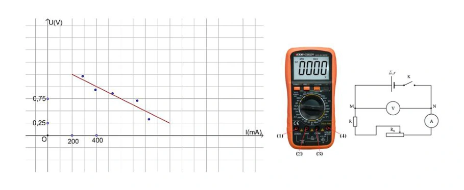
Đáp án và lời giải
Đáp án: a) Sai; b) Đúng; c) Đúng; d) Sai.
Hướng dẫn giải:
a) Sai. Khóa \(K\) cần được thao tác đúng quy trình: chỉ đóng khi lấy số liệu và không để đóng quá lâu; không phải “hạn chế đóng mở” một cách chung chung để giảm sai số.
b) Đúng. Điện trở dây nối và điện trở trong của dụng cụ đo làm mạch thực khác mô hình lí tưởng, là một nguồn sai số.
c) Đúng. Với dòng cỡ mA, chọn thang dòng DC; theo sơ đồ cổng (2) là cổng mA và cổng (3) là COM, mắc nối tiếp đúng cực tính như phát biểu.
d) Sai. Kéo dài đường thẳng \(U-I\) đến \(I=0\) cho tung độ khoảng \(1{,}50\) V, nên \(\xi\approx1{,}50\) V, không phải \(1{,}48\) V.
Bài 28
Để thực hiện thí nghiệm đo suất điện động ξ và điện trở trong r của nguồn, dụng cụ thí nghiệm được bố trí như sơ đồ. Học sinh thu được đồ thị biểu diễn mối quan hệ giữa U – I như hình bên dưới.
a) Để hạn chế sai số, ta cần lựa chọn thang đo phù hợp trên đồng hồ đo điện đa năng. b) Sau khi đã lắp xong mạch điện, học sinh tiến hành ngay việc lấy số liệu mà không c) ần thông qua giáo viên. c) Suất điện động trong trường hợp này là 1,50 V. d) Điện trở trong trong trường hợp này là 1,25 Ω.
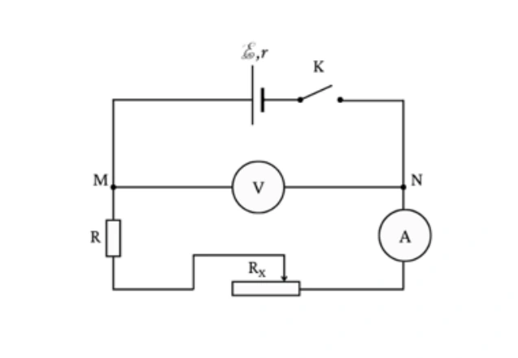
Đáp án và lời giải
Đáp án: a) Đúng; b) Sai; c) Đúng; d) Đúng.
Hướng dẫn giải:
a) Đúng. Chọn thang đo phù hợp giúp tăng độ phân giải nhưng vẫn tránh quá thang, nhờ đó giảm sai số đọc.
b) Sai. Sau khi lắp mạch phải kiểm tra lại sơ đồ, thang đo và cực tính; trong thí nghiệm ở trường cần báo giáo viên kiểm tra trước khi đóng mạch.
c) Đúng. Trên đồ thị \(U=\xi-Ir\), khi \(I=0\) thì \(U=\xi\). Giao điểm với trục \(U\) là \(1{,}50\) V, nên \(\xi=1{,}50\) V.
d) Đúng. Chọn \(M(0{,}400\ \text{A};1{,}00\ \text{V})\) và \(N(0{,}800\ \text{A};0{,}50\ \text{V})\): \(r=(U_M-U_N)/(I_N-I_M)=0{,}50/0{,}40=1{,}25\ \Omega\).
Thông hiểu — Trắc nghiệm 4 lựa chọn
Bài 29
Ghép cột A và cột B tương ứng để thể hiện các dụng cụ thí nghiệm trong bài thực hành đo suất điện động ξ và điện trở trong r của nguồn. Cột A
Cột B (1)
(a). Khóa K. (2)
(b). Điện trở đã biết giá trị. (3)
(c). Bảng lắp mạch điện. (4)
(d). Pin điện hóa. (5)
(e). Biến trở 100 Ω. (6)
(f). Đồng hồ điện đa năng hiện số. (7)
(g). Dây nối
A. (1) – (a); (2) – (f); (3) – (e); (4) – (c); (5) – (b); (6) – (d); (7) – (g).
B. (1) – (d); (2) – (e); (3) – (b); (4) – (f); (5) – (a); (6) – (c); (7) – (g).
C. (1) – (d); (2) – (b); (3) – (e); (4) – (f); (5) – (a); (6) – (c); (7) – (g).
D. (1) – (a); (2) – (d); (3) – (e); (4) – (f); (5) – (b); (6) – (c); (7) – (g).
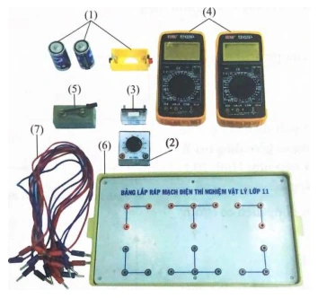
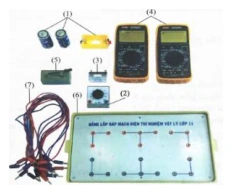
Đáp án và lời giải
Đáp án: B Hướng dẫn giải:
Dùng \(U=\mathcal E-Ir\); từ hai trạng thái tải khác nhau lập hai phương trình để xác định \(\mathcal E\) và \(r\).
Đối chiếu kết quả với các lựa chọn, phương án phù hợp là B. (1) – (d); (2) – (e); (3) – (b); (4) – (f); (5) – (a); (6) – (c); (7) – (g).
Vận dụng — Trắc nghiệm 4 lựa chọn
Bài 30
Khi thực hiện thí nghiệm đo suất điện động ξ và điện trở trong r của nguồn. Điều chỉnh biến trở tại vị trí 100 Ω, ta thu được các kết quả của hiệu điện thế lần lượt là 1,42 V; 1,41 V; 1,39 V. Giá trị trung bình của hiệu điện thế trong trường hợp này là
A. 1,42 V.
B. 1,41 V.
C. 1,40 V.
D. 1,39 V.
Đáp án và lời giải
Đáp án: B Hướng dẫn giải:
Dùng \(U=\mathcal E-Ir\); từ hai trạng thái tải khác nhau lập hai phương trình để xác định \(\mathcal E\) và \(r\).
Đối chiếu kết quả với các lựa chọn, phương án phù hợp là B. 1,41 V.
Bài 31
Khi thực hiện thí nghiệm đo suất điện động ξ và điện trở trong r của nguồn. Điều chỉnh biến trở tại vị trí 100 Ω, ta thu được các kết quả của cường độ dòng điện lần lượt là 51 mA; 54 mA; 52 mA. Bỏ qua sai số dụng cụ, Sai số tuyệt đối trung bình của cường độ dòng điện trong trường hợp này là
A. 1,0
A. B. 1,0 mA.
C. 52 mA.
D. 52 A.
Đáp án và lời giải
Đáp án: B Hướng dẫn giải:
Dùng \(U=\mathcal E-Ir\); từ hai trạng thái tải khác nhau lập hai phương trình để xác định \(\mathcal E\) và \(r\).
Vậy kết quả cần tìm là B.
Bài 32
Khi thực hiện thí nghiệm đo suất điện động ξ và điện trở trong r của nguồn, điều chỉnh biến trở tại vị trí 90 Ω, ta thu được các kết quả của hiệu điện thế lần lượt là 1,38 V; 1,40 V; 1,37 V. Bỏ qua sai số của dụng cụ. Cách ghi kết quả thí nghiệm hiệu điện thế nào sau đây đúng với số chữ số có nghĩa?
A. (1,38 ± 0,01) V.
B. (1,383 ± 0,010) V.
C. (1,4 ± 0,1) V.
D. (1,38 ± 0,02) V.
Đáp án và lời giải
Đáp án: A Hướng dẫn giải:
Dùng \(U=\mathcal E-Ir\); từ hai trạng thái tải khác nhau lập hai phương trình để xác định \(\mathcal E\) và \(r\).
⟹U = U̅ ± ∆U = (1,38 ± 0,01) V.
Đối chiếu kết quả với các lựa chọn, phương án phù hợp là A. (1,38 ± 0,01) V.
Bài 33
Thực hiện thí nghiệm đo suất điện động ξ và điện trở trong r của nguồn. Điều chỉnh biến trở tại vị trí 80 Ω, ta thu được các kết quả của hiệu điện thế lần lượt là 1,35 V; 1,32 V; 1,31 V. Biết độ chia nhỏ nhất (ĐCNN) của Volt kế là 0,01V, sai số của dụng cụ đo bằng một nửa ĐCNN. Cách ghi kết quả thí nghiệm hiệu điện thế nào sau đây đúng với số chữ số có nghĩa?
A. (1,3 ± 0,1)V.
B. (1,327 ± 0,018) V.
C. (1,32 ± 0,01)V.
D. (1,33 ± 0,02) V.
Đáp án và lời giải
Đáp án: D. \((1{,}33\pm0{,}02)\) V.
Hướng dẫn giải: Giá trị trung bình: \(\overline U=(1{,}35+1{,}32+1{,}31)/3=1{,}3267\) V \(\approx1{,}33\) V.
Sai số ngẫu nhiên trung bình: \(\overline{\Delta U}=(|1{,}35-1{,}3267|+|1{,}32-1{,}3267|+|1{,}31-1{,}3267|)/3\approx0{,}0156\) V.
Sai số dụng cụ bằng nửa độ chia nhỏ nhất: \(\Delta U_{dc}=0{,}005\) V. Do đó \(\Delta U\approx0{,}0156+0{,}005=0{,}0206\) V \(\approx0{,}02\) V.
Vậy ghi kết quả \(U=(1{,}33\pm0{,}02)\) V.
Đối chiếu nguồn
PDF nguồn làm tròn \(\overline U=1{,}3267\) V thành \(1{,}32\) V. Theo quy tắc làm tròn thông thường đến \(0{,}01\) V, giá trị đúng là \(1{,}33\) V; repository hiệu chỉnh phương án D tương ứng.